Machine learning: Model Selection
Last updated on 2025-07-09 | Edit this page
Overview
Questions
- What is machine learning and what benefits does it present?
- How do I select an appropriate model for my data?
- What are the difference between supervised and unsupervised models?
- What are difference between traditional and deep learning machine learning?
Objectives
- Understand the background of machine learning and what it does.
- To understand the aspects of your data to refine your model selection.
- To understand the difference between supervised and unsupervised models.
- To know the differences between traditional and deep learning models.
- To understand the positives and negatives to different model approaches.
Introduction
Machine learning comprises a variety of tools and methodologies designed to uncover patterns within datasets. This lesson aims to introduce a selection of these techniques, although there exist numerous others beyond the scope of this session. These techniques can be broadly categorised into two main groups: predictors and classifiers. Predictors are employed to forecast a value or a set of values based on a given set of inputs. For instance, they may predict the cost of an item considering economic conditions and the price of raw materials or forecast a country’s GDP based on its life expectancy. On the other hand, classifiers are tasked with categorised data into distinct groups. For example, they might discern visible characters within an image of written text or determine whether a message is spam or legitimate.
General overview
Many machine learning systems, although not all, acquire knowledge by processing a sequence of input and output data, which they then utilize to construct a model. The mathematical underpinnings of machine learning are agnostic to the nature of the data, based upon whether it can be represented numerically or categorized. Examples of such applications include:
- Estimating an individual’s weight based on their height.
- Predicting commute duration given prevailing traffic conditions.
- Forecasting housing prices based on stock market fluctuations.
- Distinguishing between spam and legitimate emails.
- Identifying whether an image contains a person or not.
Typically, these models require extensive training with hundreds, thousands, or even millions of examples before they achieve sufficient accuracy for practical predictions or classifications. Some systems undertake training as a one-time process, resulting in the creation of a model. Others may continuously refine their training through real-world system usage and human feedback known as reinforcement learning. For instance, every time a user labels an email as spam or not spam, they likely contribute to further training of the spam filter’s model.
Types of output
Predictors will usually involve a continuous scale of outputs, such as the price of something or as classifiers which will tell you which class (or classes) are present in the data. For example, a system to recognize handwriting numbers from an input image will need to classify the output into one of a set of potential characters e.g. 1 to 9.
Machine learning vs Artificial Intelligence
Artificial Intelligence encompasses systems with generalized intelligence, theoretically capable of solving a wide array of problems. However, AI is a broad term with varying interpretations. Machine learning systems, on the other hand, are typically trained to address specific problems. While they may exhibit learning behaviour, they lack the generalized intelligence to solve any problem a human could tackle. This usually means that a Machine Learning model trained on one domain isn’t applicable to another without any additional training. Additionally, these systems often require hundreds or thousands of examples to learn and are limited to relatively straightforward classifications. In contrast, a human-like system could learn from a single example. Another definition of Artificial Intelligence traces back to the 1950s and Alan Turing’s “Imitation Game.” According to this concept, a system could be deemed intelligent if it could deceive a human into believing they were interacting with another human when in fact, they were conversing with a computer. Modern endeavours in this realm are approaching the point of successfully fooling humans, yet achieving a machine with full human-like intelligence remains a distant prospect.
Some examples of Machine learning used within our daily lives include:
- Image Recognition
- Object Detection
- Character Recognition
- Insurance Premiums
- Energy usage
- Example of machine learning in research
- Detecting water leaks in pipes.
- Cancer detection.
- Improving farming productivity.
Reflecting on the real world.
Q: What items/products that are called AI but after that definition would you now consider to be machine learning?
A: As we are yet to achieve general intelligence anything shown for example on TV is actually just machine learning!!! e.g. the new smart feature that are being incorperated into phones.
Limitations of Machine Learning
There is a common statement used in computer science, that defines the effectiveness of machine learning methods.
Garbage In = Garbage Out !!!
This slogan highlights the principle that if the input data provided is of poor quality or irrelevant, the resulting output will likely be similarly flawed. For example, if we attempt to train a machine learning system to establish a correlation between two variables that are fundamentally unrelated, the model may still generate a semblance of a connection, but the output will lack meaningful significance. This is often apparent when the model’s output appears erratic or seemingly random.
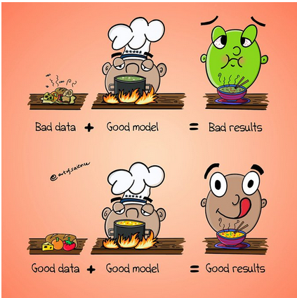.
Bias or lacking training data
The input data may also lack sufficient diversity to encompass all potential scenarios. Biases present in the data collection process can subsequently manifest in the machine learning system. For instance, if data on crime reporting is gathered, it may skew towards wealthier areas where incidents are more likely to be reported. Historical data might be inadequate in terms of coverage or relevance to the specific context being analysed. For example, imagine creating a model to transcribe written text from historical documents. If the model is trained solely on documents from the 1950s to 2000, it may perform well when tested on similar samples from that era. However, testing the model on pre-1950s material might yield poor results because handwriting styles and language usage evolve over time.
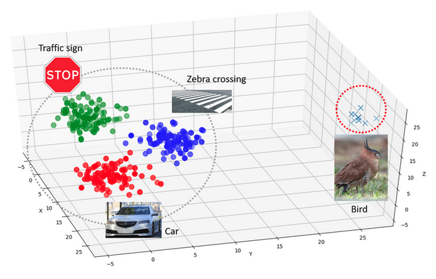.
Effect of outter-distrabution testing.
Q: What do think would happen if say we trained a model on one type of medical scan, say mammography (X-ray) and then tested our model using ultrasound.
A: As our model doesnt know how to detect features in ultrasound the results would be random and unpredictable.
Extrapolation
We can only confidently forecast outcomes for data that falls within the range of our training data. When attempting to extrapolate beyond the scope of our training data, it’s likely that our predictions will be inaccurate. An easy way to see this is to plot your training data based on it features along with the sample you want to analyse. If the sample is nowhere near your data, then you could consider this sample an outlier.
Over fitting
Sometimes ML algorithms become over trained to their training data and struggle to work when presented with real data. Meaning that the model has focused too much on certain characteristics that determine said task, but these may not be applicable when it is used to predict on the test set. This again results in some random predictions. Therefore, its critical not to over train (train for too long) your model.
Overfiting question.
Q: What do you think happens to the results of the test set if you training your model for too long and it becomes over fitted.
A: Typically the model will perform badly on the testing data, as over fitting describes a model paying to much attention to attributes/characteristics specific to the training data.
Inability to explain answers
Many machine learning techniques will give us an answer given some input data even if that answer is wrong. Most are unable to explain any kind of logic in arriving at that answer. This can make diagnosing and even detecting problems with them difficult.
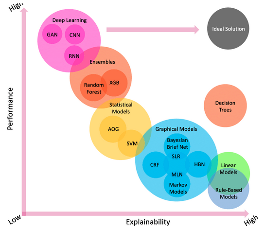.
(cite: https://www.sciencedirect.com/science/article/abs/pii/S1389041723001225)
The issues with the lack of explainablity
Q: Say you have created a model that achieves 95% accuracy in classification on a given task. Then you go to and expert and show them the model, what do you think the first thing they are going to ask? What fields do you think this lack of explainablity is a massive issue?
A: Any medical field it becomes a massive issue, especially because patents lives could be drectly effected.
Ethics and Machine Learning
There are increasing worries about the ethics of using machine learning. In recent year’s we’ve seen several worrying problems from machine learning entering all kinds of aspects of daily life and the economy:
- The first death from an autonomous car which failed to brake for a pedestrian.[1]
- Highly targeted advertising based around social media and internet usage. [2]
- The outcomes of elections and referendums being influenced by highly targeted social media posts. This is compounded by the data being obtained without the users’ consent. [3]
- The mass deployment of facial recognition technologies. [4]
- The possible first use of autonomous military robots planning to kill in battle. [5]
Problems with bias
Machine learning systems are often presented as more impartial and consistent ways to make decisions. For example, sentencing criminals or deciding if somebody should be granted bail. There have been several examples recently where machine learning systems have been shown to be biased because the data they were trained on was already biased. This can occur due to the training data being unrepresentative and under representing certain groups. For example, if you were trying to automatically screen job candidates and used a sample of people the same company had previously decided to employ then any biases in their past employment processes would be reflected in the machine learning.
Problems with explaining decisions
Many machine learning systems (e.g. neural networks) can’t really explain their decisions. Although the input and output are known trying to explain why the training caused the network to behave in a certain way can be very difficult. If a decision is questioned by a human, it’s difficult to provide any rationale as to how a decision was arrived at.
Problems with accuracy
No machine learning system is ever 100% accurate. Getting into the high 90s is usually considered good. But when we’re evaluating millions of data items this can translate into 100s of thousands of mis-identifications. If the implications of these incorrect decisions are serious then it will cause major problems. For instance if it results in somebody being imprisoned or even investigated for a crime or maybe just being denied insurance or a credit card.
Energy Usage
Many machine learning systems (especially deep learning) need vast amounts of computational power which in turn can consume vast amounts of energy. Depending on the source of that energy this might account for significant amounts of fossil fuels being burned. It is not uncommon for a modern GPU accelerated computer to use several kilowatts of power, running this for one hour could easily use as much energy a typical home would use in an entire day. This can be particularly bad when models are constantly being retrained or when “parameter sweeps” are done to find the best set of parameters to train with.
Ethics of machine learning in research
- Not all research using machine learning will have major ethical implications. Many research projects don’t directly affect the lives of other people, but this isn’t always the case.
- Some questions you might want to ask yourself (and which an ethics committee might also ask you):
- Will anything your machine learning system does decide that somehow affects a person’s life?
- Will anything your machine learning system does decide that somehow affects an animal’s life?
- Will you be using any people to create your training data? Will they have to look at any disturbing or traumatic material during the training process?
- Are there any inherent biases in the dataset(s) you’re using for training?
- How much energy will this computation use? Are there more efficient ways to get the same answer?
Something to think about.
Q: In groups discuss who you think is responsible if a AI/ML learning model goes wrong?
A: There is no correct answer, this is a heavily debated topic.
Machine learning Pipeline
Machine learning is a rapidly evolving and diverse field, making it essential to select the most suitable methods for your specific problem. To help guide your choice, refer to the flowchart below:
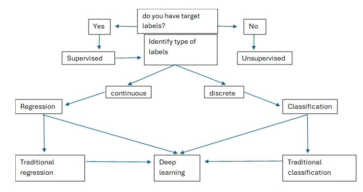.
Definitions
Supervised Machine Learning
\(Definition\): Supervised learning is when the model is trained on a labelled dataset, meaning the data includes both the inputs and the correct outputs (labels). The model learns by comparing its predictions to the actual outcomes and adjusting accordingly.
\(Example\): You have a dataset with features like hours studied, attendance, etc., and labels like pass/fail. The model learns the relationship and can predict outcomes for new data.
Unsupervised Machine Learning
\(Definition\): Unsupervised learning deals with unlabelled data. The model tries to find hidden patterns, groupings, or structures within the data without being told the “correct” answer.
\(Example\): You have customer data with purchase history but no predefined labels. The model can group customers into similar segments based on their behaviour.
There are numerous types of machine learning, but the most common divide is that of traditional and deep learning.
Traditional Machine Learning
\(Definition\): Traditional machine learning involves algorithms that learn patterns from data by applying statistical methods and predefined features. It typically requires manual feature engineering, where experts select the relevant attributes of the data to train models like.
\(Key Points\):
- Requires human effort for feature selection and extraction.
- Performs well with structured data (tables, numerical data).
- Simpler models, often faster to train with smaller datasets.
Deep Learning
\(Definition\): Deep learning is a subset of machine learning that uses artificial neural networks, especially deep neural networks, to automatically learn complex patterns from large datasets. It can automatically extract features from raw data such as images, audio, or text.
\(Key Points\)
- Uses multi-layered neural networks.
- Excels with unstructured data (images, videos, text, audio).
- Requires large amounts of data and computational power.
- Capable of automatically learning relevant features.
Traditional Machine Learning
Traditional machine learning refers to a class of algorithms and approaches that learn patterns from data using relatively structured, often simpler methods compared to deep learning. These algorithms typically require manual feature extraction and rely on mathematical models that are easier to interpret and computationally cheaper.
Key Characteristics of Traditional Machine Learning:
- Manual Feature Engineering: Human experts define which features (input variables) are important.
- Structured Data: Works best on tabular or structured data (e.g., spreadsheets, databases).
- Interpretable Models: Many traditional models are transparent and explainable.
- Less Computational Power Required: Compared to deep learning, traditional ML usually runs faster and requires less hardware.
Common Traditional Machine Learning Algorithms:
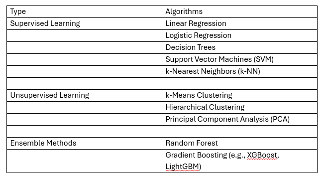.
Traditional machine learning is always a good starting point when considering applying machine learning to your dataset. While these models may not always achieve the highest accuracy, they offer the advantage of being fully explainable. This allows you to understand how the model is making decisions and assess whether it is analysing your data in a way that aligns with your expectations.
Unsupervised (Clustering)
Clustering involves the categorization of data points based on their similarities, offering a robust method for detecting patterns within datasets. It typically operates without the need for training, distinguishing it as an unsupervised learning approach. This lack of training requirement facilitates swift application.
Applications of Clustering:
- Looking for trends in data
- Data compression, all data clustering around a point can be reduced to just that point. For example, reducing colour depth of an image.
- Pattern recognition
Example in K-means
K-means clustering algorithm is a straightforward technique aimed at pinpointing the centroid of each cluster. It achieves this by seeking a point that minimizes the distance between the centroid and all the points within the cluster. While the algorithm requires a predetermined number of clusters to identify, a common approach involves experimenting with various cluster numbers and employing additional tests to determine the optimal configuration.
Limitations of K-Means:
- Requires number of clusters to be known in advance
- Struggles when clusters have irregular shapes
- Will always produce an answer finding the required number of clusters even if the data isn’t clustered (or clustered in that many clusters).
- Requires linear cluster boundaries
Advantages of K-Means:
- Simple algorithm, fast to compute. A good choice as the first thing to try when attempting to cluster data.
- Suitable for large datasets due to its low memory and computing requirements.
Algorithm
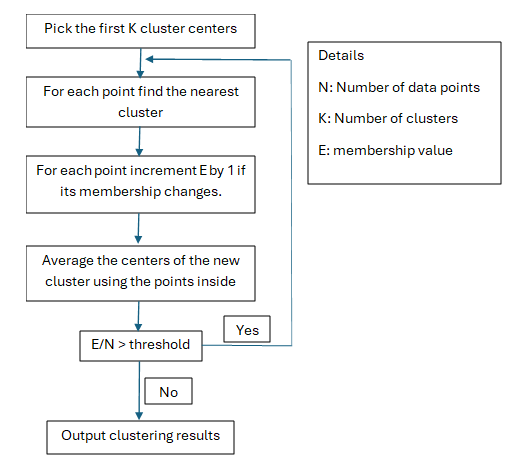.
iris dataset https://drive.google.com/file/d/14hZdSJbOwBS6GdZvjcQf3qW9ueeVuBFW/view?usp=sharing
Coded example
PYTHON
import pandas as pd
import matplotlib.pyplot as plt
iris_df = pd.read_csv("iris.csv") ### make sure youhave the right path
print(iris_df.head())
sp = iris_df.drop_duplicates(subset=['variety'])
sp = list(sp['variety'])
print(iris_df.head())
for opt in sp:
subset_df = iris_df[iris_df['variety'] == opt ]
plt.scatter(subset_df['petal.length'], subset_df['petal.width'],label =opt)
plt.xlabel('petal length (cm)')
plt.ylabel('petal width (cm)')
plt.title('petal length vs petal width')
plt.legend()
#plt.close()
from sklearn.cluster import KMeans
kmeans = KMeans(n_clusters=3,
random_state=0, n_init="auto").fit(iris_df.iloc[:,2:4])
print(kmeans.cluster_centers_)
print(kmeans.labels_)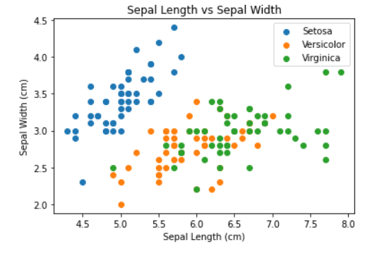.
As observed, the “setosa” species appears to cluster more distinctly, while there is some overlap or noise between “versicolor” and “virginica,” despite their apparent similarity. Now, let’s execute the model. Since the kmeans function is included in the base package of R, there’s no need to install any additional packages. When using the kmeans function, it’s essential to specify the “centers” parameter, which represents the number of clusters we intend to create. In this scenario, we know that the appropriate value is 3. Let’s proceed by setting it accordingly. Now lets try and cluster all the features
Plotting the prediction
PYTHON
iris_df["Kmeans_petal"] = kmeans.labels_
sp = iris_df.drop_duplicates(subset=['Kmeans_petal'])
sp = list(sp['Kmeans_petal'])
for opt in sp:
subset_df = iris_df[iris_df['Kmeans_petal'] == opt ]
plt.scatter(subset_df['petal.length'], subset_df['petal.width'], label =opt)
plt.xlabel('Petal Length (cm)')
plt.ylabel('Petal Width (cm)')
plt.title('Petal Length vs Petal Width')
plt.legend()
#plt.show() 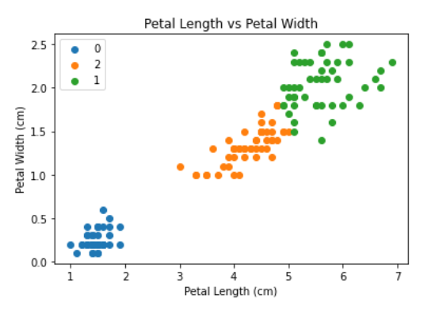.
Supervised
Classification
Supervised classification is a machine learning approach where a model is trained to assign data to specific, predefined categories or labels based on example data. The term ‘supervised’ refers to the fact that the model learns from a labeled dataset, where each example is already associated with a known outcome or class. Typically, supervised classification models rely on either manually crafted rules or algorithms that are generally straightforward to interpret and explain.
How it Works
Training Phase:
- You provide the model with a dataset containing input features (e.g., measurements, text, images) and the correct labels or categories.
- The model learns the patterns and relationships between the inputs and their corresponding labels.
Testing/Prediction Phase:
- Once trained, the model is given new, unseen data without labels.
- It predicts the most likely category for each new data point based on what it learned.
Example: KNN
The k-nearest Neighbors algorithm, commonly referred to as KNN or k-NN, is a supervised learning classifier that falls under the non-parametric category. It leverages proximity to classify or predict the grouping of a specific data point. Although it can tackle both regression and classification tasks, it is predominantly employed as a classification tool. The underlying principle assumes that similar data points tend to cluster together. In classification scenarios, the algorithm assigns a class label through a majority vote mechanism. In other words, the label that appears most frequently among neighboring data points is adopted. While technically termed “plurality voting,” it is often referred to as “majority vote” in literature. The distinction lies in the requirement for a true majority (over 50%), which suits binary classification situations. In cases involving multiple classes (e.g., four categories), a conclusive decision regarding a class label can be made with a threshold vote exceeding 25%.
Before we train any non-linear machine learning models, we need to divide our data into train and test sets. To do this we use a library called scikit learn. Furthermore, traditionally machine learning models only accept inputs which are between zero and one. so we will also need to scale our data.
How it works (Euclidean Distance)
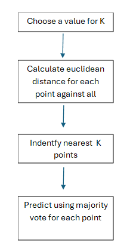.
\(d=\sqrt{(x_2 - x_1)^2 + (y_2 - y_1)^2}\)
where:
- point 1 is \((x_1, y_1)\)
- point 2 is \((x_2, y_2)\)
Strengths:
- Simple to implement and understand
- Non-parametric (no assumptions about data distribution)
- Works well with small datasets
Limitations:
- Slow with large datasets (since it computes distances to all points)
- Sensitive to irrelevant features and feature scaling
- Choosing the right K can be tricky (too small = noisy; too big = too generalized)
Worked example
PYTHON
import matplotlib.pyplot as plt
import pandas as pd
import numpy as np
from sklearn import neighbors
from sklearn.model_selection import train_test_split
iris_df = pd.read_csv("iris.csv")
iris_df['labels'] = iris_df.variety.astype('category').cat.codes
X, y = iris_df.iloc[:, :4], iris_df['labels']
print(X)
X_train, X_test, y_train, y_test = train_test_split(X,y, test_size = 0.25, random_state = 0)
clf = neighbors.KNeighborsClassifier(n_neighbors=5)
clf.fit(X_train, y_train)
result = clf.predict(X_test)
ground = np.array(y_test)
print(result)OUTPUT
[2 1 0 2 0 2 0 1 1 1 2 1 1 1 1 0 1 1 0 0 2 1 0 0 2 0 0 1 1 0 2
1 0 2 2 1 0 2] Regression
Machine Learning Regression refers to a category of algorithms that predict continuous numeric values (as opposed to classification, which predicts discrete labels). The goal of regression is to model the relationship between one or more input variables (features) and a continuous output variable (target).
What Is Regression in Machine Learning?
In simple terms:
- Input: A set of known features (e.g., square footage, age of a house)
- Output: A continuous value (e.g., price of the house)
Linear Regression is one of the most fundamental algorithms in traditional machine learning, primarily used for predicting a continuous numeric value based on one or more input features.
What Is Linear Regression?
Linear regression models the relationship between a dependent variable y and one or more independent variables x. It assumes that this relationship can be approximated with a straight line (in 2D) or a hyperplane (in higher dimensions).
Simple Linear Regression:
Predicts y from a single input variable x:
\(y=mx+c\)
Where:
- y is the output (target)
- x is the input (feature)
- m is the slope (how much y changes per unit change in x)
- c is the intercept (value of y when x = 0)
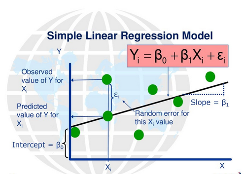.
Code example: Linear regression
PYTHON
import matplotlib.pyplot as plt
import pandas as pd
from sklearn.linear_model import LinearRegression
import numpy as np
iris_df = pd.read_csv("iris.csv")
from sklearn.model_selection import train_test_split
iris_df['labels'] = iris_df.variety.astype('category').cat.codes
y= iris_df['petal.length']
iris_df = iris_df.drop(labels= 'petal.length', axis = 1)
iris_df = iris_df.drop(labels = 'variety', axis=1)
X_train, X_test, y_train, y_test = train_test_split(iris_df, y, test_size= 0.33, random_state=101)
reg = LinearRegression().fit(X_train, y_train)
print(reg.intercept_)
reg.predict(X_test)
pred = reg.predict(X_test)
pred = reg.predict(X_test)
print('Predicted petal length (cm):',pred[0])
print('Actual petal length (cm):', 1.4)OUTPUT
Predicted petal length (cm): 1.37097289501913 Actual petal length (cm):
1.4
Types of time series classification
There are many algorithms that are designed to perform time series classification. Depending on the data, one type might produce higher classification accuracies than other types. This is why it’s important to consider a range of algorithms when diving into a time series classification problem. The use of an automated platform that would rigorously explore the space of available algorithms and hyperparameters might save significant time in at least the initial stages of exploration by indicating the algorithmic pipeline that produces the optimized accuracy for the input data set. Such platforms with time series classification capability are expected in the near future.
Example: Distance-based approaches
A distance measure is an objective score that summarizes the relative difference between two objects in a problem domain. The smaller the distance measure between two objects (typically data describing something), the more similar the items are. Some types of distance measures that are typically used in machine learning are:
- Euclidian distance
- Hamming distance
- Manhattan distance
- Minkowski distance
These distance measurements are used along with some well-known distance-based algorithms such as k-nearest neighbors (KNN). It measures the distance between the test object and all of the objects in the training data set. The k shortest distances are then selected, and the new object is assigned the class that is most represented in the k objects from the training set. When k is set to one, the algorithm reduces to the one-nearest neighbor, and the test object is assigned the class of the training set sample with the shortest distance.
There are other kernel-based algorithms that use distance measures at their core. Perhaps the most well-known of these algorithms is the support vector machine (SVM). This algorithm creates a hyperplane (or line in 2-dimensions) to separate objects into classes. The position of the test object is then calculated with respect to the hyperplane and the class is assigned accordingly.
Dynamic time warping (DTW) is a distance-based algorithm that is used for measuring the distance between two time series. DTW does this by calculating the distances between each point in the time series and summing these for the overall distance. The algorithm is constructed to deal with slight shifts between very similar time series. DTW in conjunction with 1-NN has been the gold standard for time series classification for the past decade and is almost always used as a comparative algorithm in benchmarking studies.
Code example
PYTHON
from sktime.classification.distance_based import KNeighborsTimeSeriesClassifier
from sktime.datasets import load_arrow_head
from sklearn.model_selection import train_test_split
from sklearn.metrics import accuracy_score
# Load a sample time series dataset (e.g., ArrowHead)
X, y = load_arrow_head(return_X_y=True)
print(y)
X_train, X_test, y_train, y_test = train_test_split(X, y, test_size=0.2, random_state=42)
# Create a KNeighborsTimeSeriesClassifier instance (e.g., using DTW with 3 neighbors and distance weighting)
knn = KNeighborsTimeSeriesClassifier(distance="dtw", n_neighbors=3, weights="distance")
# Train the classifier
knn.fit(X_train, y_train)
# Make predictions on the test data
y_pred = knn.predict(X_test)
# Evaluate the accuracy
accuracy = accuracy_score(y_test, y_pred)
print(f"Accuracy: {accuracy}")OUTPUT
['0' '1' '2' '0' '1' '2' '0' '1' '2' '0' '1' '2' '0' '1' '2' '0' '1' '2'
'0' '1' '2' '0' '1' '2' '0' '1' '2' '0' '1' '2' '0' '1' '2' '0' '1' '2'
'0' '0' '0' '0' '0' '0' '0' '0' '0' '0' '0' '0' '0' '0' '0' '0' '0' '0'
'0' '0' '0' '0' '0' '0' '0' '0' '0' '0' '0' '0' '0' '0' '0' '0' '0' '0'
'0' '0' '0' '0' '0' '0' '0' '0' '0' '0' '0' '0' '0' '0' '0' '0' '0' '0'
'0' '0' '0' '0' '0' '0' '0' '0' '0' '0' '0' '0' '0' '0' '0' '1' '1' '1'
'1' '1' '1' '1' '1' '1' '1' '1' '1' '1' '1' '1' '1' '1' '1' '1' '1' '1'
'1' '1' '1' '1' '1' '1' '1' '1' '1' '1' '1' '1' '1' '1' '1' '1' '1' '1'
'1' '1' '1' '1' '1' '1' '1' '1' '1' '1' '1' '1' '1' '1' '2' '2' '2' '2'
'2' '2' '2' '2' '2' '2' '2' '2' '2' '2' '2' '2' '2' '2' '2' '2' '2' '2'
'2' '2' '2' '2' '2' '2' '2' '2' '2' '2' '2' '2' '2' '2' '2' '2' '2' '2'
'2' '2' '2' '2' '2' '2' '2' '2' '2' '2' '2' '2' '2']
Accuracy: 0.8604651162790697Deep learning
Neural networks, drawing inspiration from the workings of the human brain, represent a machine learning approach adept at discerning patterns and categorizing data, frequently leveraging images as input. This technique, rooted in the 1950s, has evolved through successive iterations, surmounting inherent constraints. Today, the pinnacle of neural network advancement is often denoted as deep learning. This method uses the concept of self-learned features which describes the ability to automatically extract and learn relevant features from raw data without the need for manual feature engineering.
Perceptron’s
Perceptron’s serve as the foundational units within neural networks, mirroring the functionality of individual neurons in the brain. Typically equipped with one or more inputs and a solitary output, they operate by weighting each input and aggregating these weighted values. Subsequently, the summed result undergoes evaluation by an activation function, determining whether the neuron emits a signal. While some activation functions employ a straightforward threshold step mechanism, delineating between zero and one based on input magnitude, alternative designs may utilize different functions. Nevertheless, these functions commonly yield outputs ranging from zero to one and retain a stepwise characteristic.
Construction of a perceptron model
The function requires three parameters: Inputs, a list of input values; Weights, a list of weight values; and Threshold, denoting the activation threshold. Initially, we perform element-wise multiplication of each input with its corresponding weight. Subsequently, the total sum of these products is computed. If this sum falls below the activation threshold, the output is zero; otherwise, it is one.
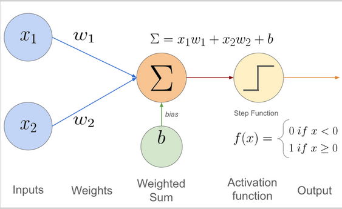.
(cite:https://muneebsa.medium.com/deep-learning-101-lesson-7-perceptron-f6a698d81be8)
Perceptron limitations
A solitary perceptron is incapable of resolving any function that lacks linear separability, necessitating the ability to partition input and output classes with a straight line. An illustrative instance is the XOR function below:
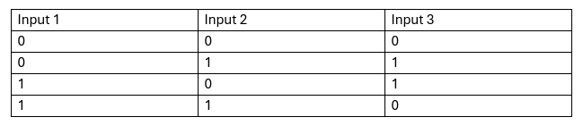.
which yields zero output when all inputs are either one or zero, defying straightforward linear separation. This inadequacy, termed linear separability, was recognized in the 1960s, leading to a stagnation in neural network advancement for over a decade, often referred to as the “AI Winter.”
Multi-layer Perceptrons
A single perceptron lacks the capability to address functions that lack linear separability. To tackle such nonlinear challenges, we rely on multiple perceptrons, often organized into several layers. These layers constitute networks of artificial neurons, each capable of processing one or more inputs and producing a single output. The neurons interconnect within expansive networks, commonly comprising tens to thousands of units. Typically, these networks are structured in layers, encompassing an input layer, one or more hidden layers, and ultimately, an output layer.
Training Multi-layer perceptron’s
Multi-layer perceptron’s need to be trained by showing them a set of training data and measuring the error between the network’s predicted output and the true value. Training takes an iterative approach that improves the network a little each time a new training example is presented. There are several training algorithms available for a neural network today, but we are going to use one of the best established and well known, the backpropagation algorithm. The algorithm is called back propagation because it takes the error calculated between an output of the network and the true value and takes it back through the network to update the weights. If you want to read more about back propagation, please see this chapter from the book “Neural Networks - A Systematic Introduction”.
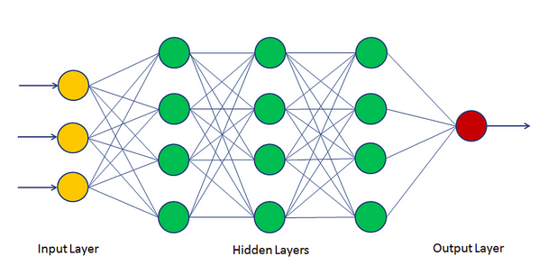.
(cite:https://machinelearninggeek.com/multi-layer-perceptron-neural-network-using-python/)
What is an Activation Layer?
An activation layer, often referred to as an activation function, is a crucial component in neural networks that determines whether a neuron should be “activated” or not. It introduces non-linearity into the network, enabling it to learn complex patterns and relationships in the data.
Why is it Important?
Without activation layers, a neural network would essentially behave like a simple linear model, no matter how many layers it has. Non-linear activation functions allow the network to model complex, real-world relationships, such as recognizing objects in images, understanding speech, or making predictions based on complicated data.
How it Works:
- After each layer of computations (e.g., weighted sums), the activation function transforms the output.
- This transformed output is then passed to the next layer or used as the final prediction.
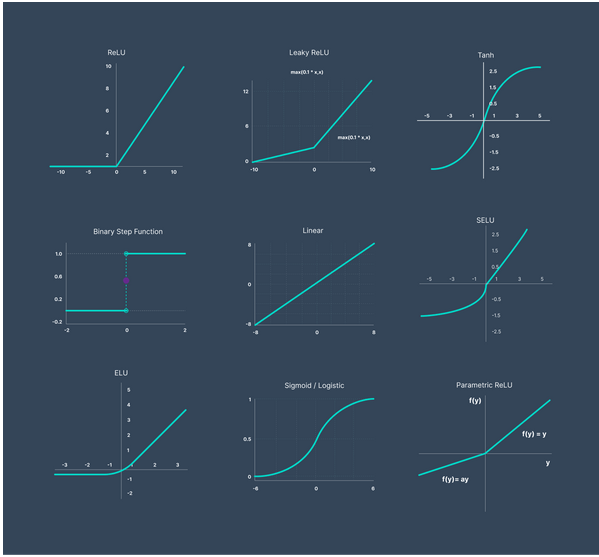.
(cite:https://www.v7labs.com/blog/neural-networks-activation-functions)
Use cases
Multi-layer perceptrons offer the flexibility to function as either a regressor or a classifier by simply changing the activation function applied to the output layer (along with the objective function, which we’ll cover later). For instance, if you want your model to perform classification, you would typically use an activation function like SoftMax, which converts the outputs into probabilities that sum to one across all classes. On the other hand, for regression tasks where you want to estimate continuous values, you would usually apply a linear activation function to the output layer.
Code example classification:
PYTHON
import matplotlib.pyplot as plt
import pandas as pd
import numpy as np
from sklearn.neural_network
import MLPClassifier from sklearn.model_selection
import train_test_split
iris_df = pd.read_csv("iris.csv")
iris_df['labels'] = iris_df.variety.astype('category').cat.codes
X, y = iris_df.iloc[:, :4], iris_df['labels']
X_train, X_test, y_train, y_test = train_test_split(X, y, test_size = 0.25, random_state = 0)
print(X_train.shape, y_train.shape)
clf = MLPClassifier(solver='lbfgs', random_state=1, max_iter=300)
clf.fit(X, y) result = clf.predict(X_test)
ground = np.array(y_test)
print(result, ground)
clf.score(X_test, y_test)OUTPUT
[2 1 0 2 0 2 0 1 1 1 2 1 1 1 1 0 1 1 0 0 2 1 0 0 2 0 0 1 1 0 2 1 0 2 2 1
02]
[2 1 0 2 0 2 0 1 1 1 2 1 1 1 1 0 1 1 0 0 2 1 0 0 2 0 0 1 1 0 2 1 0 2 2 1
01]
Out[19]: 0.9736842105263158Code example: regression
PYTHON
import matplotlib.pyplot as plt
import pandas as pd
import numpy as np
from sklearn.neural_network import MLPRegressor
from sklearn.model_selection import train_test_split
iris_df = pd.read_csv("iris.csv")
X, y = iris_df.iloc[:, :3], iris_df["petal.width"]
X_train, X_test, y_train, y_test = train_test_split(X, y, test_size = 0.25, random_state = 0) print(X_train.shape, y_train.shape)
clf = MLPRegressor(solver='lbfgs', random_state=1, max_iter=200)
clf.fit(X, y)
result = clf.predict(X_test)
ground = np.array(y_test)
print(result, ground)
clf.score(X_test, y_test) OUTPUT
(112, 3) (112,) [1.88532522 1.14165756 0.27955749 2.06547563 0.24919028
2.28388127 0.2155882 1.51092191 1.53244915 1.19834217 1.86483485
1.45142482 1.6306123 1.4613069 1.63934615 0.23025832 1.51957326
1.54290422 0.20987057 0.24845432 1.85473185 1.6255684 0.39085837
0.18676907 1.67834109 0.14667113 0.40639156 1.34237052 0.91551074
0.27895251 2.07143315 1.67419905 0.26318909 1.79216822 1.94143883
1.2643635 0.33543957 1.81911754]
/home/corcor27/anaconda3/envs/tensorflow-gpu2/lib/python3.9/site-packages/sklearn/neural_network/\_multilayer_perceptron.py:546:
ConvergenceWarning: lbfgs failed to converge (status=1): STOP: TOTAL NO.
of ITERATIONS REACHED LIMIT.
Increase the number of iterations (max_iter) or scale the data as shown
in: <https://scikit-learn.org/stable/modules/preprocessing.html>
self.n_iter\_ = \_check_optimize_result("lbfgs", opt_res, self.max_iter)
Out[14]: 0.9227530392362144Convolutional Neural Network
A Convolutional Neural Network (CNN) is a specialized type of neural network designed to process grid-like data, such as images. CNNs are the foundation of computer vision tasks like image classification, object detection, and facial recognition. A CNN is a deep learning model that uses convolutional layers to automatically extract spatial features from input data, especially images, and uses those features for tasks like classification or detection.
How do Convolutional Neural Network work?
The core of Convolutional Neural Networks (CNNs) lies in their convolutional layers, which are specifically designed to extract features from input data most commonly images using a process called convolution. These layers use learnable filters, or kernels, that slide over the input, performing element-wise multiplications followed by summation to generate feature maps. These feature maps capture important patterns within the data, such as edges, textures, or shapes, allowing the network to learn increasingly complex, hierarchical representations. Typically, CNNs consist of multiple stacked convolutional layers, where each layer processes progressively smaller regions of the input, enabling the extraction of more abstract and high-level features as you move deeper into the network.
Convolutional Layer
- Applies filters/kernels to the input.
- These filters slide over the input image, performing element-wise multiplications and summing the results (convolution operation).
- Detects features like edges, corners, textures, etc.
- Each filter learns to detect specific patterns during training.
2D-Convolutions
2D convolutions are commonly applied for image classification tasks. In this process, the kernel also known as the sliding window takes the form of an NxN matrix, where N represents the desired size of the window. You can think of an image as a map, and the kernel functions like a tool that highlights features within that map, such as edges, boundaries, or specific textures. The diagram below illustrates how an image is represented from a computer’s perspective:
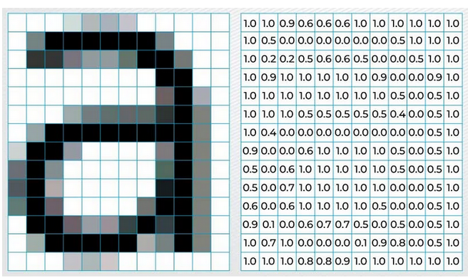.
(cite:https://www.analytixlabs.co.in/blog/convolutional-neural-network/)
Then at each layer the image is multiplied by the kernel using the process below to create the feature maps:
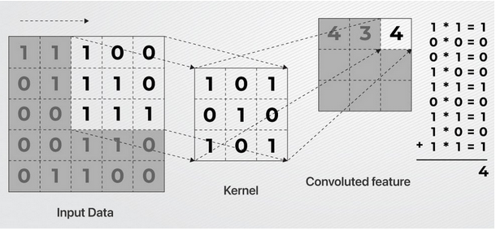.
(cite:https://www.analytixlabs.co.in/blog/convolutional-neural-network/)
Then below are the resulting feature maps:
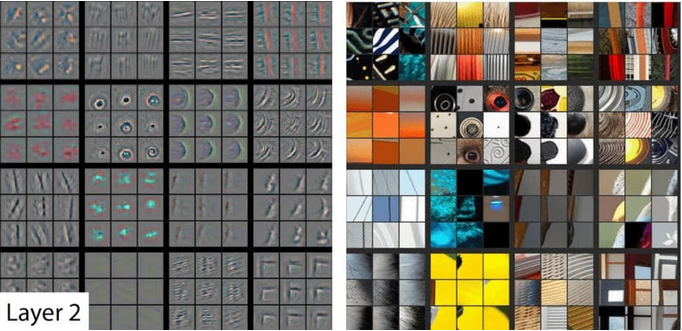.
The values in the kernel are critical for the model to understand different structures in images and that will eventually be used to form a decision. When the model is initialised these kernel values are randomly generated and only through training do they get refined such that they identify different structures based upon the objective function using Backpropagation.
Backpropagation
Backpropagation is a fundamental algorithm used to train neural networks. It works by calculating how much each weight in the network contributes to the overall error (difference between the predicted output and the actual output) and then adjusting those weights to reduce the error.
In simple terms:
- Forward Pass: The input data moves through the network, producing an output.
- Error Calculation: The difference between the predicted output and the actual target is measured using a loss function.
- Backward Pass (Backpropagation):
- The algorithm calculates the gradient (rate of change) of the loss with respect to each weight in the network using the chain rule of calculus.
- Gradients indicate how to adjust each weight to reduce the error.
- Weight Update: Weights are updated using an optimization algorithm like Gradient Descent, moving in the direction that minimizes the loss.
Example Analogy:
Imagine trying to get a dart to hit the bullseye. Each throw (prediction) shows how far off you are (error), and based on that, you adjust your aim (update weights) to get closer to the target over time.
Time series data with 1-D convolutions
What Are 1D Convolutions?
1D Convolutions are typically used when working with sequential data like time series, audio signals, or any data arranged in a one-dimensional sequence.
In this approach, a small filter or “kernel” slides along the sequence (one dimension) and extracts patterns or features, like how 2D convolutions scan over images.
How It Works:
- The input is a 1D array (or sequence) of values for example, stock prices over time or audio waveforms.
- A kernel of size N moves along the sequence, step by step (called the stride).
- At each position, the kernel performs a weighted sum (dot product) of the values under the window.
- This produces an output feature map that highlights important patterns, like peaks, trends, or repeating signals.
Example Analogy:
Imagine you’re reading a long string of text, and you slide a small window over 3 words at a time to spot specific phrases. Similarly, a 1D convolution slides over a sequence to detect relevant features.
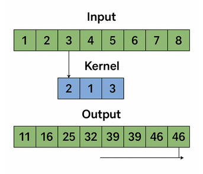.
(cite:https://www.sciencedirect.com/science/article/abs/pii/S0167404822001432)
The challenge with training these models is that they require several components, such as an optimizer, loss function, and learning rate, among others. As a result, there is no code example provided in this section, since we first need to explore these various elements before we can proceed with training the models.